Cẩm nang từng bước cho cán bộ Hải quan: nạp Báo cáo Quyết toán của doanh nghiệp gia công,
sản xuất xuất khẩu và chế xuất, chạy bộ kiểm tra chênh lệch, đọc điểm rủi ro dữ liệu,
xử lý phát hiện có truy nguồn và xuất kiến nghị. Mỗi hướng dẫn có ảnh chụp thật với
khung đỏ và số thứ tự chỉ đúng chỗ cần bấm — số trên ảnh khớp
với số của các bước bên cạnh.
🏢
Doanh nghiệp & dữ liệuNạp BCQT, xác nhận cột
▶
Kiểm traChạy nền theo hàng đợi
📊
Điểm & phát hiệnTruy nguồn về dòng dữ liệu
🤖
Trợ lý AITra cứu, tổng quan kiểm tra
Không tìm thấy hướng dẫn phù hợp. Thử từ khoá khác.
A
Bắt đầu
Đăng nhập, làm quen thanh điều hướng và nắm quy trình sáu bước. Đọc mục này trước khi làm bất kỳ thao tác nào.
A1
Đăng nhập hệ thống
Nhập tài khoản do quản trị viên cấp.
Nhập mật khẩu.
Bấm Đăng nhập.
Phiên đăng nhập có hiệu lực 8 giờ, sau đó phải đăng nhập lại.
Sai mật khẩu 8 lần trong 5 phút thì địa chỉ truy cập bị khoá 5 phút.
Màn hình đăng nhập
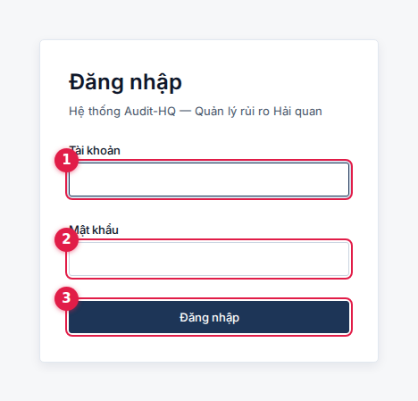
Số ①②③ tương ứng bước 1, 2, 3.
Lần đăng nhập đầu tiên, hoặc sau khi quản trị viên đặt lại mật khẩu, hệ thống buộc đổi mật khẩu trước khi cho thao tác. Mật khẩu tối thiểu 8 ký tự. Đổi lúc khác: bấm tên tài khoản góc phải → 🔑 Đổi mật khẩu.
A2
Làm quen thanh điều hướng
💬 Trợ lý — trang trợ lý AI (mục F).
📑 Danh mục — danh mục toàn bộ bài kiểm tra.
📚 Tài liệu — thư viện phương pháp luận và văn bản pháp lý.
📋 Công việc — hàng đợi các lượt chạy nền. Số trên biểu tượng là số việc đang chạy hoặc vừa xong mà chưa xem.
⚙️ Quản trị — chỉ quản trị viên thấy nhóm này.
👤 Tên tài khoản — đổi mật khẩu, đăng xuất.
Nút 💬 ở góc dưới bên phải mọi trang — mở trợ lý ngay tại trang đang xem, không phải rời trang (mục F2).
Thanh điều hướng
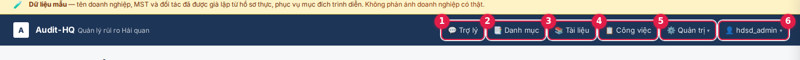
Thanh này hiển thị ở mọi trang.
Dải màu vàng ở đầu mỗi trang nhắc rằng dữ liệu trong bản dùng thử đã được giả lập từ hồ sơ thực, không phản ánh doanh nghiệp có thật.
A3
Quy trình sáu bước
Chọn hoặc tạo doanh nghiệp — mục B1, B2.
Nạp dữ liệu — tải Mẫu 15, 15a, 16 và Báo cáo hàng chi tiết theo từng kỳ, xác nhận cột nếu hệ thống yêu cầu — mục B3 đến B8.
Chạy kiểm tra — chạy toàn bộ hoặc chọn từng bài; hệ thống xử lý nền — mục C.
Đọc kết quả — điểm rủi ro, phát hiện theo bài kiểm tra, tổng quan AI — mục D.
Xử lý phát hiện — đối chiếu chứng cứ truy nguồn rồi đánh dấu trạng thái — mục E1, E2.
Xuất kiến nghị — kết xuất Excel để lập hồ sơ — mục E4.
Phạm vi của hệ thống. Điểm và phát hiện là chỉ số rủi ro về chất lượng dữ liệu báo cáo, dùng để sắp xếp ưu tiên kiểm tra. Đây không phải đánh giá mức tuân thủ pháp luật — việc phân loại tuân thủ chính thức thuộc thẩm quyền Tổng cục Hải quan theo Thông tư 81/2019/TT-BTC. Mọi quyết định cuối cùng thuộc thẩm quyền cán bộ Hải quan.
A4
Hai vai trò và phạm vi nhìn thấy
Cán bộ — chỉ thấy và thao tác trên doanh nghiệp được phân công. Doanh nghiệp ngoài phạm vi bị ẩn hoàn toàn, kể cả khi hỏi qua trợ lý AI. Không thấy nhóm ⚙️ Quản trị.
Quản trị viên — thấy tất cả doanh nghiệp và toàn bộ chức năng quản trị (mục H).
Góc nhìn cán bộ
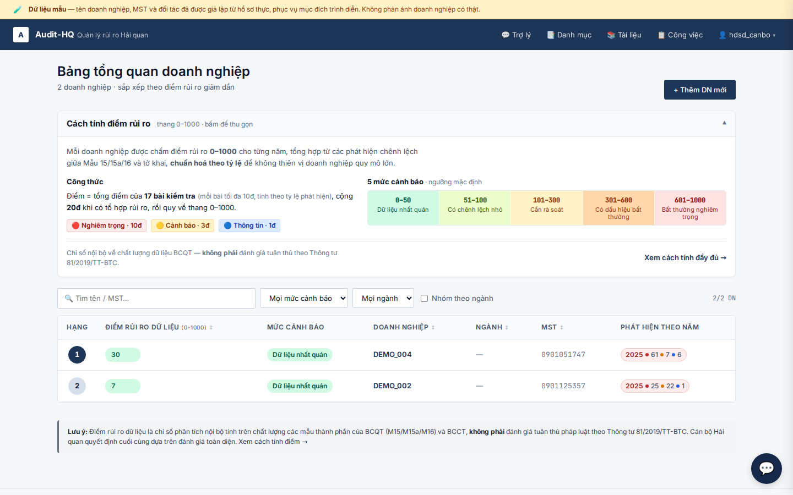
Cùng hệ thống, tài khoản cán bộ được phân công 2 doanh nghiệp: danh sách chỉ còn 2 dòng, thanh trên cùng không có nhóm ⚙️ Quản trị.
Không thấy doanh nghiệp cần làm việc? Tài khoản của bạn chưa được phân công doanh nghiệp đó — liên hệ quản trị viên (mục H2).
B
Doanh nghiệp & nạp dữ liệu
Từ bảng tổng quan đến khi kỳ báo cáo có đủ dữ liệu Tầng 1 trong kho, sẵn sàng chạy kiểm tra.
B1
Bảng tổng quan doanh nghiệp
Ô tìm — lọc nhanh theo tên hoặc mã số thuế.
Bộ lọc mức cảnh báo — chỉ hiện doanh nghiệp thuộc mức đã chọn. Bên cạnh còn bộ lọc theo ngành và tuỳ chọn Nhóm theo ngành.
Cột điểm rủi ro — bấm tiêu đề cột để đổi chiều sắp xếp. Mặc định danh sách xếp theo điểm giảm dần.
Mức cảnh báo — nhãn màu tương ứng năm mức ngưỡng.
Phát hiện theo năm — mỗi kỳ một nhãn, kèm số phát hiện tách theo ba mức độ.
+ Thêm DN mới — tạo hồ sơ doanh nghiệp (mục B2).
Bảng tổng quan
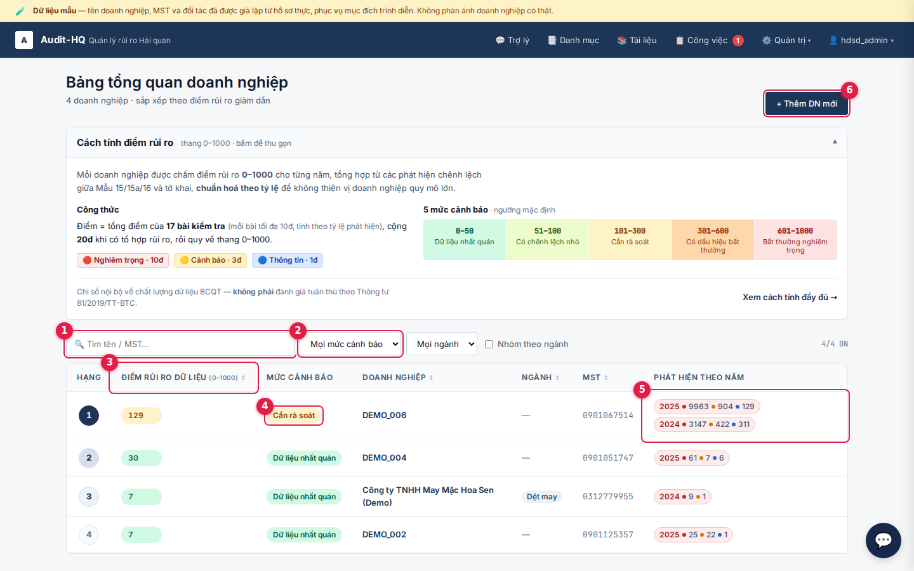
Khối "Cách tính điểm rủi ro" ở đầu trang tóm tắt công thức và năm mức cảnh báo.
B2
Thêm doanh nghiệp
Tên doanh nghiệp — bắt buộc. Hệ thống tự thêm hậu tố (Demo) nếu chưa có.
Ngành — dùng để lọc và nhóm ở bảng tổng quan.
Mã số thuế.
Địa chỉ.
Bấm Tạo DN & quản lý tài liệu — hệ thống chuyển thẳng sang trang tài liệu.
Thêm doanh nghiệp
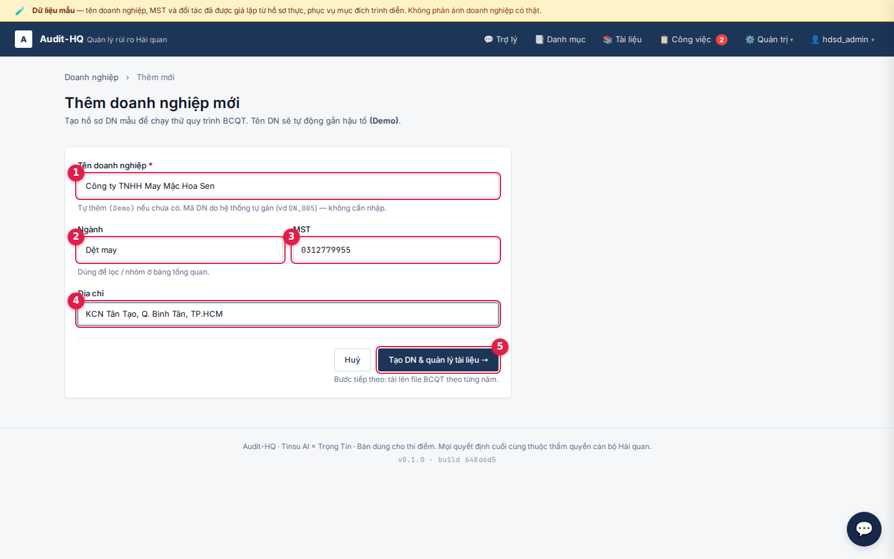
Mã doanh nghiệp dạng DN_NNN do hệ thống tự gán.
Cán bộ tạo doanh nghiệp được tự động phân công doanh nghiệp đó, không cần chờ quản trị viên gán quyền.
B3
Trang tài liệu BCQT
Chọn năm cần mở.
Bấm + Thêm để tạo kỳ đó trong hồ sơ.
Hoặc bấm Tải lên dữ liệu BCQT để đi thẳng sang màn hình tải nhiều file (mục B4).
Doanh nghiệp chưa có tài liệu
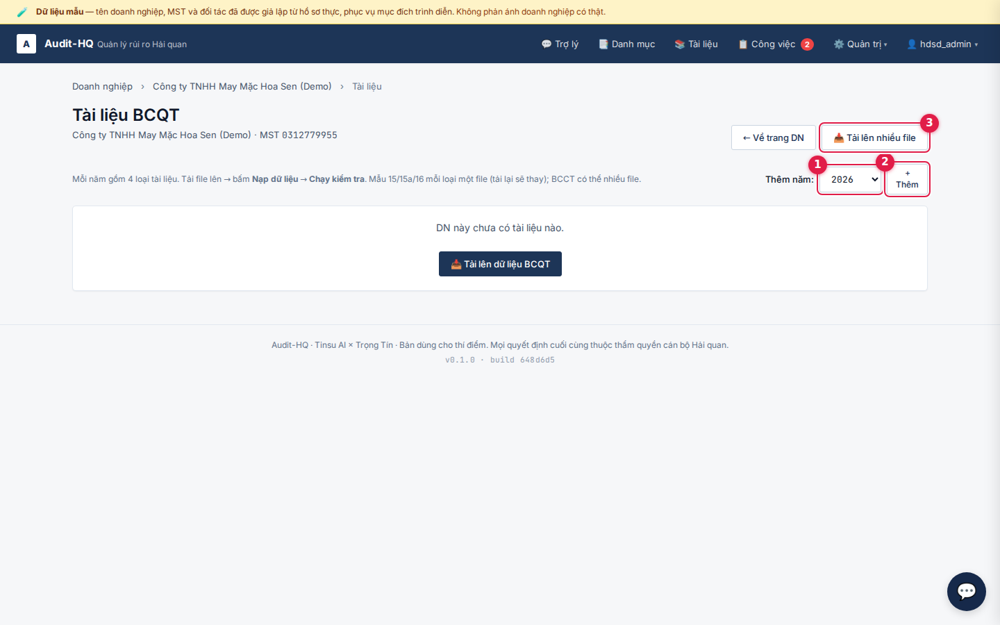
Trang tài liệu tổ chức theo từng năm.
Loại tài liệu
Nội dung
Số file mỗi kỳ
Mẫu 15
Cân đối nhập – xuất – tồn nguyên vật liệu
1 file, tải lại sẽ thay
Mẫu 15a
Cân đối nhập – xuất – tồn thành phẩm
1 file, tải lại sẽ thay
Mẫu 16
Định mức thực tế
1 file, tải lại sẽ thay
BCCT
Báo cáo hàng chi tiết (dữ liệu tờ khai)
nhiều file, cộng dồn
B4
Tải file lên
Chọn kỳ báo cáo.
Chọn file Mẫu 15.
Chọn file Mẫu 15a.
Chọn file Mẫu 16.
Chọn file BCCT.
Bấm Tải lên.
Tải lên nhiều file
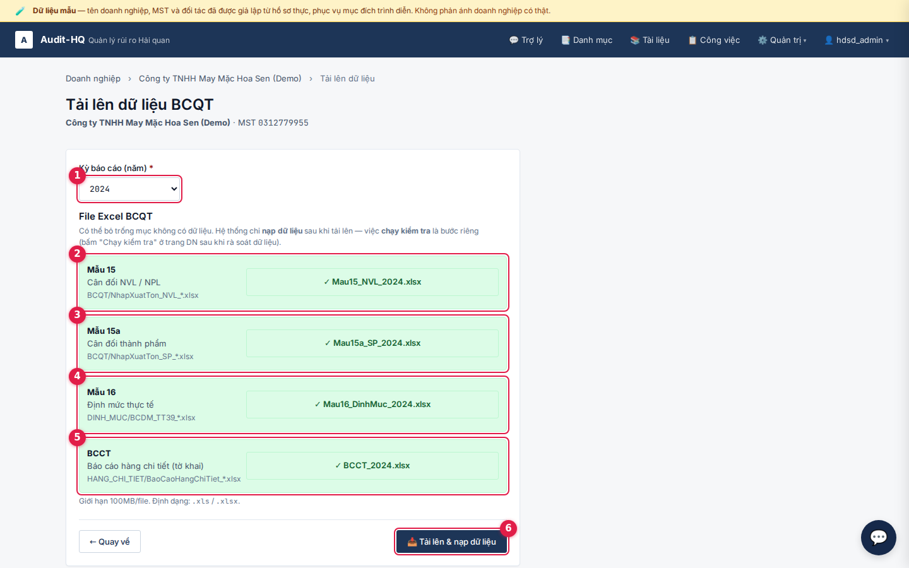
Có thể tải từng ô riêng lẻ trên trang tài liệu thay vì tải cả bốn loại một lần.
Cách tải
Bước tiếp theo
Tải lên nhiều file
Phân tích rồi nạp luôn vào kho dữ liệu — trừ khi có cột cần xác nhận, khi đó lượt nạp dừng lại và báo cần xác nhận cột trước khi nạp (mục B7).
Tải từng ô
Chỉ lưu file. Nạp bằng nút ⤵️ Nạp dữ liệu của kỳ.
Chỉ chấp nhận .xls và .xlsx, tối đa 100 MB mỗi file. Hệ thống kiểm tra định dạng thật của file, không tin phần mở rộng tên file. Nếu cấu trúc bất thường, hệ thống báo lỗi ngay và cho bấm Chẩn đoán bằng AI để biết file sai ở đâu. Cả hai cách đều không tự chạy kiểm tra — đó là bước riêng (mục C).
B5
Đọc trạng thái sau khi tải
Trạng thái của kỳ — tóm tắt kỳ đã nạp bao nhiêu dòng.
⤵️ Nạp dữ liệu — đưa file đã tải vào kho dữ liệu Tầng 1 cho cả kỳ.
▶️ Chạy kiểm tra — chỉ bật khi kỳ đã có dữ liệu.
Nhãn tiến độ của từng file.
Nhãn độ tin cậy cột của từng file.
✏️ Sửa cột — mở lại màn hình map cột của file đã nạp (mục B7).
Kỳ đã nạp đủ bốn loại
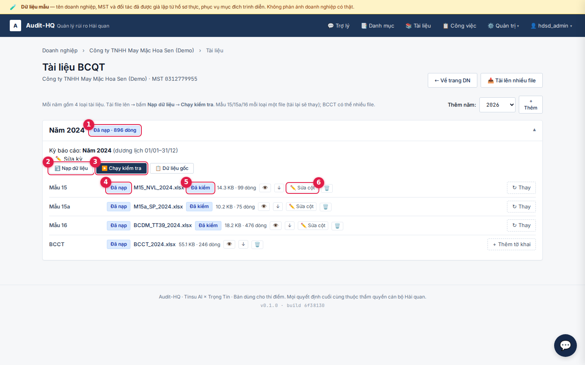
Mỗi file mang hai nhãn, đọc theo hai trục khác nhau.
Nhãn tiến độ
Ý nghĩa
Đã tải lên
File đã lưu, chưa nạp vào kho dữ liệu.
Đã phân tích
Đã đọc được cấu trúc, đang chờ cán bộ xác nhận cột.
Đã nạp
Dữ liệu đã vào kho Tầng 1, sẵn sàng chạy kiểm tra.
Cảnh báo / Lỗi
Nạp không trọn vẹn hoặc không đọc được — xem thông báo kèm theo.
Nhãn độ tin cậy cột
Ý nghĩa
không có nhãn
Cột đọc được bằng căn cứ đủ mạnh, không còn việc phải làm. Nhãn chỉ hiện khi có ngoại lệ.
Cần xác nhận
Có cột chỉ suy theo vị trí, hoặc chỉ khớp đẳng thức cân đối — chưa đủ để chắc đúng cột.
B6
Xem nhanh nội dung file
Bấm biểu tượng 👁 hoặc tên file để xem nội dung Excel thô, đúng như hệ thống đọc được.
Dùng màn hình này để đối chiếu khi nghi ngờ hệ thống đọc sai cột hoặc sai dòng dữ liệu.
Nút ↓ tải file gốc về máy. Mỗi lượt tải xuống đều được ghi vào nhật ký truy cập.
Xem nhanh Mẫu 15
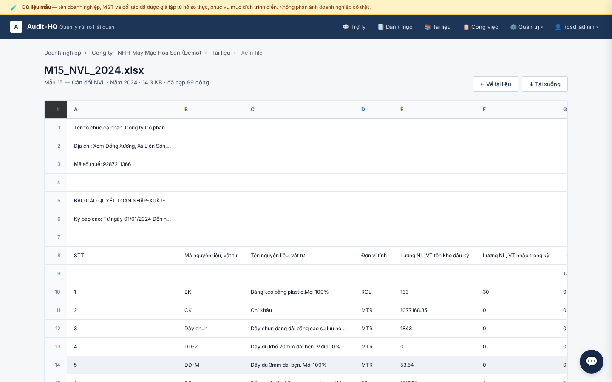
Hàng tiêu đề và vùng dữ liệu hiển thị nguyên trạng.
B7
Xác nhận map cột
Hàng tiêu đề của bảng nội dung file: cột tô xanh đã nhận đúng theo tiêu đề, cột tô vàng ⚠️ cần cán bộ xác nhận.
Nội dung file — đối chiếu trực tiếp để biết cột nào chứa số liệu nào.
Sổ quyết toán — chỉ dùng cho doanh nghiệp giữ nhiều sổ (mục D5). Để trống nghĩa là doanh nghiệp một sổ.
Bảng cột dữ liệu — mỗi dòng cho biết nguồn bằng chứng, trạng thái, những bài kiểm tra đọc cột đó, và ô nhập chỉ số cột.
Bấm ✅ Xác nhận & nạp dữ liệu.
Xác nhận map cộtSửa chỉ số ở bảng dưới thì cột tương ứng trong bảng trên sáng lên.
Nguồn bằng chứng
Nghĩa là
Cán bộ xác nhận
Cán bộ đã tự xác nhận cột này cho cấu trúc biểu của doanh nghiệp; vị trí đã lưu chỉ áp dụng cho file cùng vân tay biểu, bố cục khác thì phải xác nhận lại.
Khớp mẫu có sẵn
Khớp vân tay một họ biểu đã dựng sẵn trong hệ thống; cấu trúc đã có người soát lúc viết mẫu, nhưng mẫu dựng theo biểu chung nên không bắt được sửa đổi riêng của doanh nghiệp.
Khớp tiêu đề
Tiêu đề ngay tại cột này khớp nhãn mong đợi của trường; chỉ chắc khi người lập file ghi tiêu đề đúng nghĩa, vì tiêu đề viết tắt hoặc gộp ô thì không dò ra.
Khớp đẳng thức
Đẳng thức cân đối của biểu khớp khi lấy cột này; đủ cho cột dùng dạng tổng, nhưng đẳng thức không phân biệt hai cột cùng dấu nên vẫn có thể đang lấy nhầm cột liền kề.
Chỉ theo vị trí
Đọc theo chỉ số cột mặc định của biểu, không tín hiệu nào khác xác nhận; file lệch bố cục thì đọc sai cột mà không có dấu hiệu nào báo.
Chỉ số cột tính từ 0: cột A = 0, cột B = 1, tiếp tục như vậy. Xác nhận xong, map được lưu theo cấu trúc biểu của doanh nghiệp — lần sau gặp cùng bố cục, kể cả năm khác, không phải xác nhận lại.
Cảnh báo cần xác nhận cộtkhông chặn việc nạp: vẫn nạp và chạy kiểm tra được, nhưng phát hiện sinh ra sẽ mang cờ cho biết dựa trên cột chưa xác nhận. Đổi map cột trên file đã nạp sẽ kéo theo việc chạy lại các bài kiểm tra đọc cột đó.
B8
Kỳ báo cáo lệch năm dương lịch
Nhãn nguồn kỳ — cho biết kỳ được tự đọc từ file hay sửa tay.
Nhập Từ ngày.
Nhập Đến ngày.
Bấm Lưu kỳ.
Sửa kỳ báo cáoMặc định kỳ của năm N là 01/01–31/12.
Sau khi sửa kỳ phải bấm ⤵️ Nạp dữ liệu rồi ▶️ Chạy kiểm tra thì cửa sổ kỳ mới có hiệu lực. Trên hồ sơ doanh nghiệp, năm có kỳ tuỳ chỉnh được đánh dấu TC ở tab năm.
C
Chạy kiểm tra
Mọi lượt chạy đều diễn ra ở chế độ nền và được ghi vào hàng đợi công việc.
C1
Bốn cách chạy kiểm tra
Bấm Chọn tất cả hoặc Bỏ chọn để đặt nhanh.
Tick các bài kiểm tra cần chạy. Cả hàng đều bấm được.
Bấm nút chạy. Không tick bài nào thì chạy tất cả.
Chọn bài kiểm tra để chạy
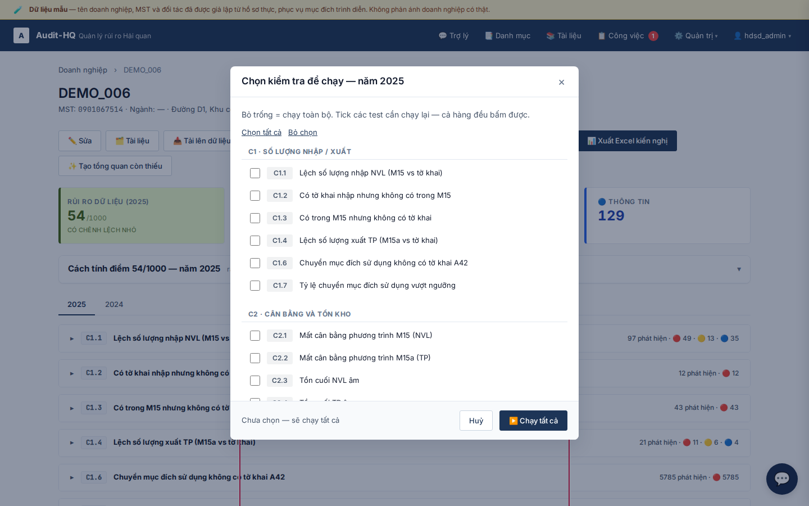
Mở bằng nút ☑️ Chọn test chạy trên hồ sơ doanh nghiệp.
Muốn chạy
Bấm nút
Toàn bộ bài kiểm tra cho kỳ đang xem
▶️ Chạy kiểm tra <năm> trên hồ sơ doanh nghiệp
Toàn bộ cho mọi kỳ có dữ liệu
🔄 Tất cả năm
Một số bài chọn trước
☑️ Chọn test chạy
Đúng một bài
▶️ Chạy lại <mã bài> trong nhóm phát hiện của bài đó
Nút chạy kiểm tra bị mờ nghĩa là kỳ đó chưa có dữ liệu trong kho. Tải file lên rồi bấm ⤵️ Nạp dữ liệu trước.
C2
Theo dõi lượt chạy
Sau khi bấm chạy, hệ thống tạo một công việc và chuyển sang trang theo dõi.
Trang tự làm mới trong lúc công việc còn chạy.
Xong thì trang hiển thị kết quả tóm tắt: số phát hiện, lỗi nếu có.
Không cần ngồi chờ — đóng trang vẫn không ảnh hưởng lượt chạy.
Đang chạy
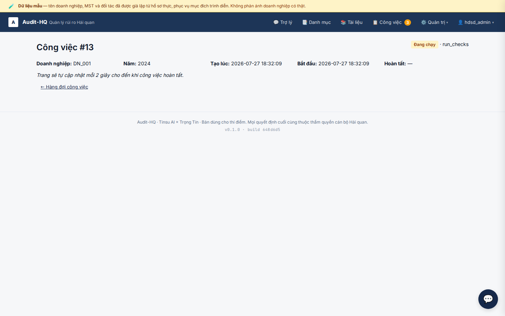
Trạng thái cập nhật liên tục.
Khi hoàn tất, phần kết quả cho biết lượt chạy đã sinh ra bao nhiêu phát hiện.
Từ đây bấm về hồ sơ doanh nghiệp để đọc kết quả (mục D).
Hoàn tất
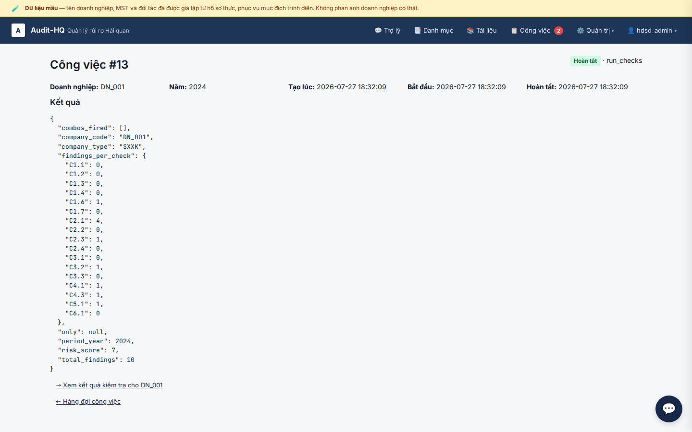
Kết quả tóm tắt của lượt chạy.
C3
Hàng đợi công việc
Bộ lọc trạng thái — Tất cả · Đang chờ · Đang chạy · Hoàn tất · Thất bại.
Cột trạng thái của từng lượt chạy.
Xem — mở trang chi tiết lượt chạy đó.
Hàng đợi công việc
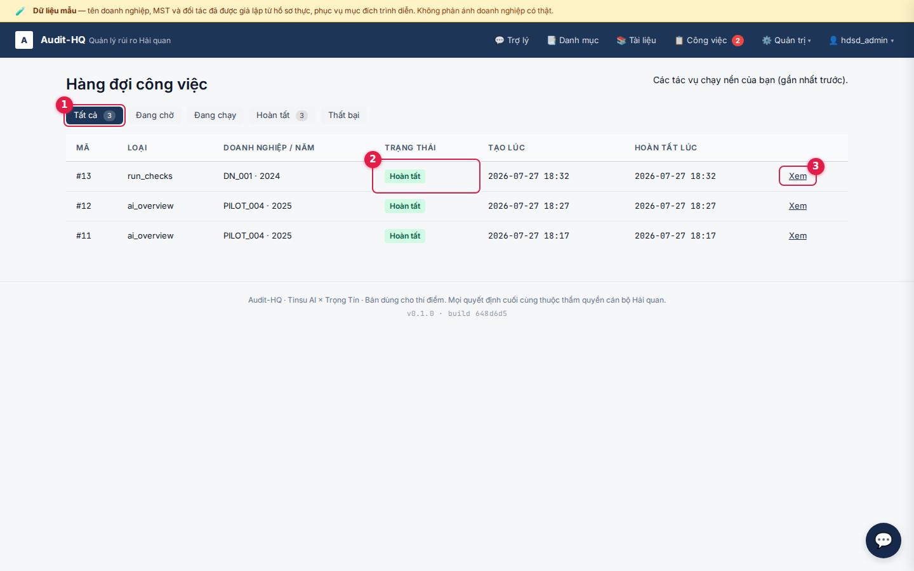
Mở bằng 📋 Công việc trên thanh trên cùng.
D
Đọc kết quả
Điểm rủi ro dữ liệu, danh sách phát hiện theo bài kiểm tra, tổng quan AI và trường hợp doanh nghiệp giữ nhiều sổ quyết toán.
D1
Hồ sơ doanh nghiệp
▶️ Chạy kiểm tra <năm> — cùng thanh còn có Sửa, Tài liệu, Tải lên, Chọn test chạy, Tất cả năm, Dữ liệu gốc, Xuất Excel kiến nghị, Tạo tổng quan còn thiếu.
Điểm rủi ro dữ liệu của kỳ đang chọn, kèm mức cảnh báo.
Số phát hiện theo mức độ — nghiêm trọng, cảnh báo, thông tin.
Khối cách tính điểm — bấm để mở chi tiết (mục D2).
Tab kỳ — chuyển giữa các kỳ báo cáo.
Phát hiện nhóm theo bài kiểm tra (mục D3).
Hồ sơ doanh nghiệp
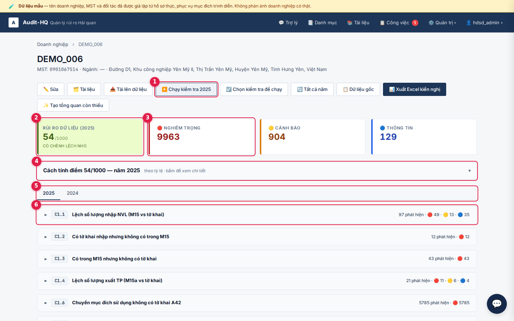
Mỗi cặp (doanh nghiệp, kỳ) có một điểm từ 0 đến 1000.
Điểm
Mức cảnh báo (ngưỡng mặc định)
0–50
Dữ liệu nhất quán
51–100
Có chênh lệch nhỏ
101–300
Cần rà soát
301–600
Có dấu hiệu bất thường
601–1000
Bất thường nghiêm trọng
Quản trị viên chỉnh được các ngưỡng này (mục H3). Ngưỡng chỉ đổi cách xếp mức, không đổi điểm.
D2
Cách tính điểm rủi ro
Công thức — điểm thô quy về thang 0–1000.
Điểm từng bài kiểm tra — mỗi bài tối đa 10 điểm; bài đã đạt trần được đánh dấu kịch khung, phát hiện thêm không làm điểm tăng nữa.
Quy mô dữ liệu — mẫu số của tỷ lệ: số mã nguyên vật liệu, số mã thành phẩm, số dòng định mức.
Chi tiết điểmĐiểm tính theo tỷ lệ giữa số phát hiện và quy mô dữ liệu, không cộng dồn theo số lượng tuyệt đối.
Vì chuẩn hoá theo tỷ lệ, doanh nghiệp quy mô lớn không bị chấm điểm cao chỉ vì có nhiều mã hàng. Trọng số mức độ: nghiêm trọng 10đ · cảnh báo 3đ · thông tin 1đ.
D3
Danh sách phát hiện
Số phát hiện của nhóm, tách theo ba mức độ.
▶️ Chạy lại đúng bài kiểm tra này. Bên cạnh là 📊 Xuất test này và ✨ Tạo tổng quan.
Mã đối tượng — bấm để mở trang chi tiết mã hàng (mục E3).
Đổi trạng thái nhanh ngay tại bảng, không cần mở trang chi tiết.
Chi tiết → mở trang phát hiện kèm chứng cứ truy nguồn (mục E1).
Một nhóm phát hiệnBảng hiện 15 dòng đầu; bấm Xem tất cả … phát hiện để mở danh sách đầy đủ có phân trang.
Mức độ
Ý nghĩa
Trọng số điểm
🔴 Nghiêm trọng
Chênh lệch lớn, khả năng cao là sai phạm.
10 điểm
🟡 Cảnh báo
Chênh lệch cần lưu ý, có thể do sai sót nghiệp vụ.
3 điểm
🔵 Thông tin
Chênh lệch nhỏ, ghi nhận để theo dõi.
1 điểm
Khi quản trị viên bật chức năng phát hiện kết hợp, các tổ hợp nhiều dấu hiệu cùng kích hoạt trên một mã hàng được hiển thị riêng ở đầu trang.
D4
Tổng quan AI cho một bài kiểm tra
Bảng số liệu — do hệ thống tính, hiện ngay khi bấm: tổng phát hiện theo mức độ, số mã liên quan và độ tập trung, phân vị các trường số, tách theo sổ quyết toán, so sánh với kỳ trước.
Nhận định chung — do mô hình ngôn ngữ viết, xuất hiện sau vài giây.
Điểm nóng và Đề xuất rà soát — mỗi mã trong điểm nóng là một liên kết sang trang chi tiết mã.
Miễn trừ trách nhiệm — là text tĩnh của giao diện, không phải do mô hình viết.
🔄 Tạo lại — sinh lại theo lần chạy mới nhất.
Tổng quan AITrong lúc chờ, chỗ nhận định hiện ⏳ Đang viết nhận định… kèm liên kết tới công việc tương ứng.
Nhãn
Nghĩa là
Cần làm gì
⚠️ Tổng quan đã cũ
Đã chạy lại kiểm tra hoặc nạp lại dữ liệu kể từ lúc sinh tổng quan.
Bấm 🔄 Tạo lại.
⚠️ Cần đối chiếu số liệu
Hậu kiểm thấy trong nhận định có con số không khớp bảng số liệu.
Đọc lại nhận định đó trước khi sử dụng.
Số liệu dùng để lập hồ sơ phải lấy từ bảng số liệu và trang chi tiết phát hiện. Phần nhận định do AI viết chỉ để tham khảo, không phải kết luận vi phạm.
Nút ✨ Tạo tổng quan còn thiếu ở đầu hồ sơ doanh nghiệp làm việc này cho mọi bài chưa có tổng quan hoặc có tổng quan đã cũ, thay vì bấm từng bài.
D5
Doanh nghiệp giữ nhiều sổ quyết toán
Ô tổng quan mỗi sổ — số mã nguyên vật liệu và số phát hiện của sổ đó.
Ô liên sổ — phát hiện không thuộc riêng sổ nào.
Bộ lọc theo sổ — Tất cả · từng sổ · Liên sổ.
Doanh nghiệp hai sổ
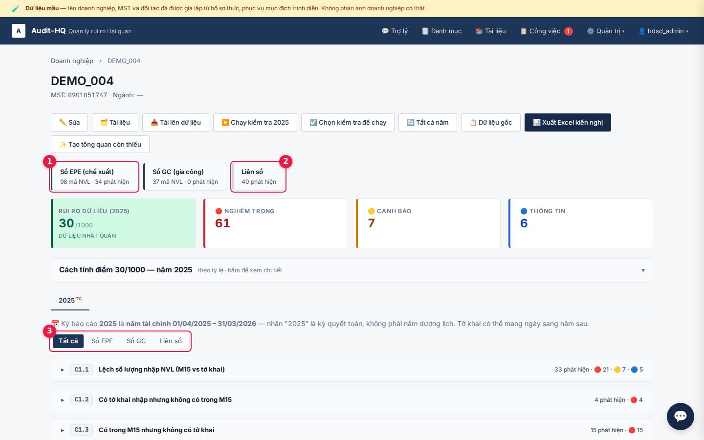
Doanh nghiệp chế xuất vừa làm chế xuất (EPE) vừa nhận gia công (GC).
Liên sổ điển hình là các phát hiện đối chiếu với tờ khai, vì tờ khai dùng chung cho cả hai sổ. Khi lọc theo một sổ mà không có phát hiện nào, hệ thống nói rõ sổ đó đã được kiểm tra và không có chênh lệch — khác với trạng thái thiếu dữ liệu hoặc chưa chạy kiểm tra.
Trường hợp cụ thể. Mục này mô tả tính năng chung. Hồ sơ thật đằng sau nó — một doanh nghiệp chế xuất nộp hai bộ quyết toán trên cùng một luồng tờ khai — được phân tích trong tài liệu nội bộ Phân tích hồ sơ pilot, kèm cơ chế xử lý hai sổ và giới hạn của cách đối chiếu này.
E
Xử lý phát hiện & kết xuất
Đối chiếu chứng cứ truy nguồn, đánh dấu trạng thái, đào sâu một mã hàng và xuất hồ sơ kiến nghị.
E1
Chi tiết phát hiện và chứng cứ truy nguồn
Mức độ và mã bài kiểm tra, kèm doanh nghiệp, kỳ, đối tượng và trạng thái.
Mô tả nghiệp vụ của bài kiểm tra, kèm ngưỡng phân mức.
Chi tiết — các trường tính toán làm nên phát hiện.
Chứng cứ truy nguồn (Tầng 1) — đúng những dòng dữ liệu gốc làm phát sinh phát hiện, kèm tên bảng và điều kiện lọc.
Cập nhật trạng thái (mục E2).
Chi tiết phát hiệnMọi phát hiện đều truy nguồn được về dòng dữ liệu cụ thể.
Khối chứng cứ có 0 dòng cũng là thông tin. Trong ảnh trên, bảng tờ khai trả 0 dòng chính là lý do phát hiện tồn tại: Mẫu 15 khai nhập 1.440 nhưng không có dòng tờ khai nào tương ứng.
E2
Đánh dấu trạng thái phát hiện
Chọn trạng thái.
Nhập ghi chú giải thích căn cứ.
Bấm Lưu cập nhật.
Cập nhật trạng thái
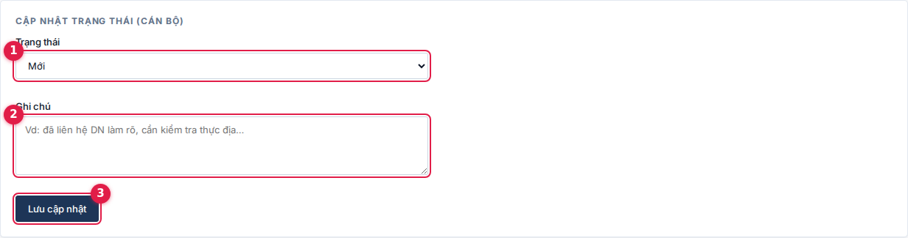
Ghi chú hiển thị ngay trong bảng danh sách phát hiện.
Trạng thái
Khi nào dùng
Mới
Chưa xử lý (mặc định).
Xác nhận
Đã xác minh là vấn đề thực sự.
Loại trừ
Không phải vấn đề — giải thích được, hoặc sai dương.
Đã ghi chú
Ghi nhận để theo dõi, chưa kết luận.
Phát hiện đánh dấu Loại trừ không tính vào điểm, và điểm rủi ro được tính lại ngay — không cần chạy lại kiểm tra.
E3
Chi tiết mã hàng
Chỉ số tổng hợp — tồn cuối kỳ, tổng nhập, tổng xuất, số năm có lệch, biến động tồn cuối qua các năm.
Cân đối kho của kỳ — biểu đồ kèm kết luận có khớp phương trình kho hay không, và đối chiếu BCCT với Mẫu 15.
Quan hệ định mức — mã này là đầu vào của những thành phẩm nào, định mức bao nhiêu.
Phát hiện liên quan — toàn bộ phát hiện của mã trong kỳ.
Chi tiết mã nguyên vật liệu
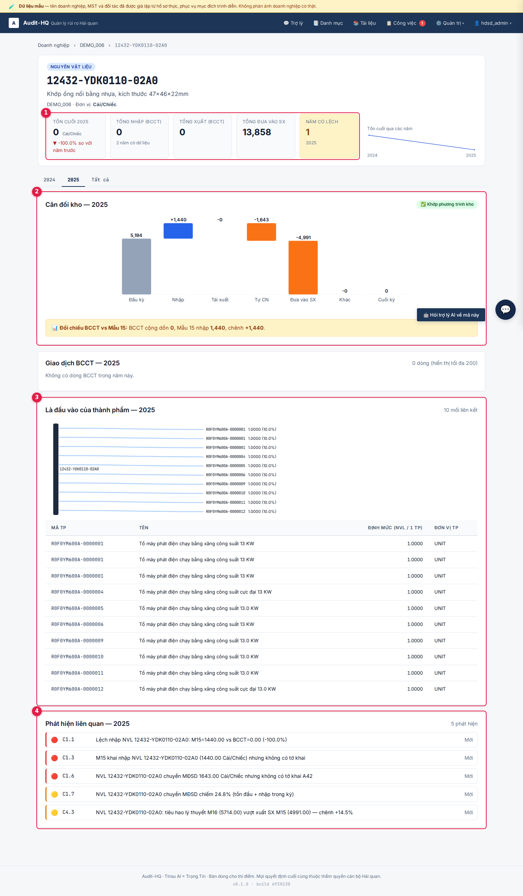
Mở bằng cách bấm vào mã hàng ở bất kỳ đâu trong hệ thống.
Nút 🤖 Hỏi trợ lý AI về mã này mở khung trợ lý với ngữ cảnh mã hàng sẵn, không phải gõ lại mã.
E4
Xuất Excel kiến nghị
Tick các bài kiểm tra cần xuất.
Số phát hiện của mỗi bài hiển thị bên phải.
Bấm nút xuất. Không tick bài nào thì xuất tất cả.
Xuất Excel kiến nghị
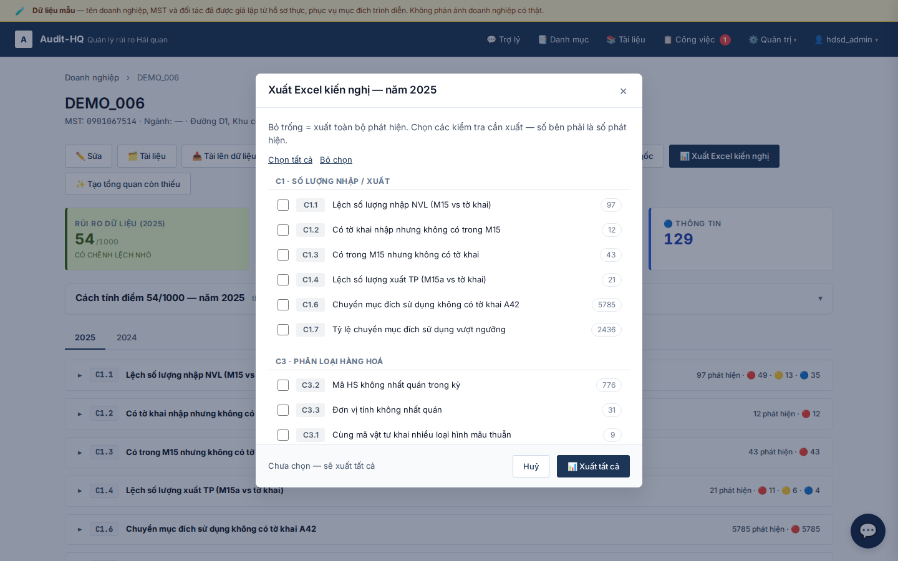
Tệp gồm danh sách phát hiện kèm chứng cứ của kỳ đang chọn.
Trong từng nhóm phát hiện còn có nút 📊 Xuất test này để xuất riêng một bài. Mỗi lượt kết xuất đều được ghi vào nhật ký truy cập.
E5
Tra cứu dữ liệu gốc
Nút 📋 Dữ liệu gốc mở màn hình duyệt trực tiếp dữ liệu Tầng 1 đã nạp.
Chọn bảng (Mẫu 15 / 15a / 16 / BCCT) và kỳ báo cáo.
Có ô tìm kiếm và phân trang.
Dữ liệu gốc Tầng 1
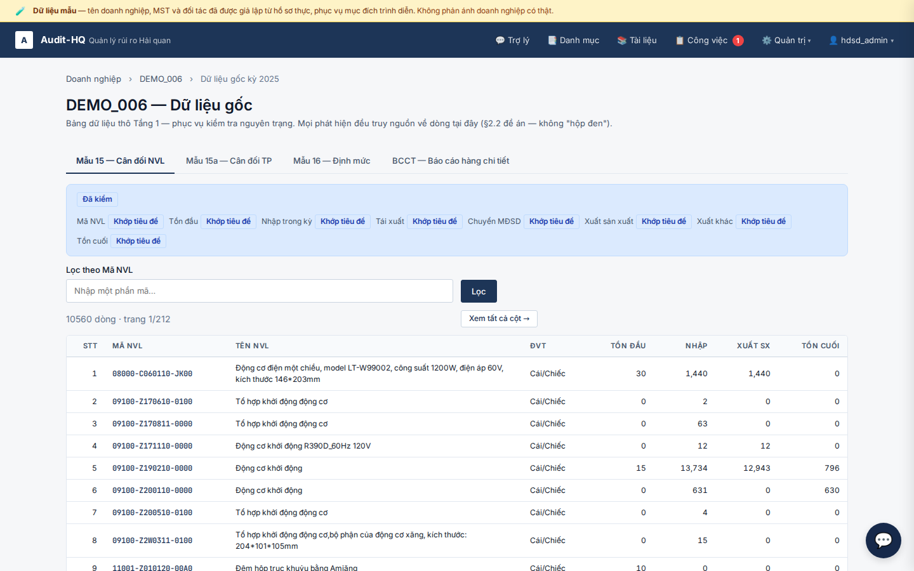
Đây là dữ liệu sau khi nạp, khác với xem nhanh file (mục B6) là nội dung Excel thô.
F
Trợ lý AI
Trợ lý làm việc trên dữ liệu của các doanh nghiệp bạn được phép xem, và luôn cho biết đã tra cứu bằng công cụ nào.
F1
Hỏi trợ lý trên trang riêng
Danh sách cuộc trò chuyện — nhóm theo doanh nghiệp, cuộc chưa gắn doanh nghiệp xếp cuối.
Câu hỏi gõ bằng tiếng Việt tự nhiên.
Nhãn công cụ — cho biết trợ lý đã dùng công cụ tra cứu nào để lấy số. Bấm vào nhãn để xem dữ liệu nguồn.
Ô nhập — gõ @ để nhắc tên doanh nghiệp hoặc mã phát hiện.
Một lượt hỏi đáp
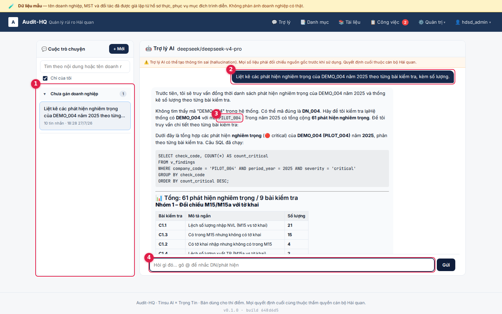
Trong ảnh, trợ lý tra DN_004 không thấy, tự tra lại danh sách mã doanh nghiệp rồi làm tiếp với mã đúng — thao tác hiển thị đầy đủ chứ không bị giấu đi.
Trợ lý làm được
Ví dụ câu hỏi
Tra cứu và giải thích phát hiện
“Liệt kê phát hiện nghiêm trọng của @DN_003 năm 2024”
Tra cứu dữ liệu gốc Mẫu 15/15a/16 và BCCT
“Mã NVL nào có tồn cuối âm?”
Giải thích điểm rủi ro
“Vì sao doanh nghiệp này được 129 điểm?”
Giải thích bài kiểm tra và căn cứ pháp lý
“C1.6 kiểm tra cái gì, theo thông tư nào?”
Đề xuất chạy kiểm tra
“Chạy lại C4.3 cho kỳ 2025”
Kết xuất Excel từ kết quả tra cứu
“Xuất danh sách vừa liệt kê ra Excel”
Trợ lý là công cụ hỗ trợ tra cứu, không thay thế phán đoán nghiệp vụ. Đề xuất chạy kiểm tra chỉ thực hiện khi cán bộ bấm xác nhận. Đối chiếu trang chi tiết phát hiện trước khi kết luận.
F2
Trợ lý ngay trên trang đang xem
Cuộc mới gắn — cho biết cuộc trò chuyện mới sẽ gắn vào doanh nghiệp nào, và đổi được.
📜 Lịch sử — mở danh sách cuộc cũ, có ô lọc theo doanh nghiệp.
⛶ Phóng to — mở rộng khung trợ lý.
Khung trợ lý bên trang
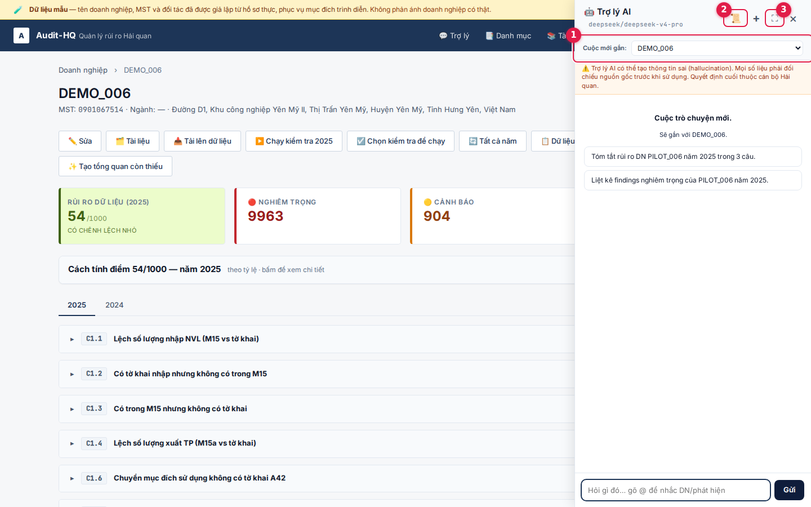
Mở bằng nút 💬 ở góc dưới bên phải mọi trang — không phải rời trang đang xem.
Nếu cuộc đang mở gắn với doanh nghiệp A trong khi bạn đã chuyển sang trang doanh nghiệp B, hệ thống báo lệch phạm vi và mời mở cuộc mới cho B — không tự đổi nhãn của cuộc đang có.
F3
Quản lý cuộc trò chuyện
Danh sách bên trái nhóm theo doanh nghiệp; cuộc chưa gắn doanh nghiệp xếp cuối.
Công tắc Chỉ của tôi bật sẵn. Quản trị viên bỏ tick để xem cuộc của cán bộ khác.
Ô tìm kiếm lọc theo nội dung hoặc tên doanh nghiệp.
Bấm biểu tượng 🏢 trên một cuộc để đổi doanh nghiệp của cuộc đó. Cán bộ chỉ chọn được doanh nghiệp trong phạm vi của mình.
Cuộc trò chuyện được lưu lại; mở lại để xem hoặc hỏi tiếp.
G
Danh mục & thư viện tài liệu
Hai trang chỉ để tra cứu, không thao tác dữ liệu.
G1
Danh mục kiểm tra
Liệt kê toàn bộ bài kiểm tra kèm mô tả nghiệp vụ, mức độ và trạng thái triển khai.
Dùng để tra ý nghĩa một mã bài kiểm tra khi đọc phát hiện.
📑 Danh mục
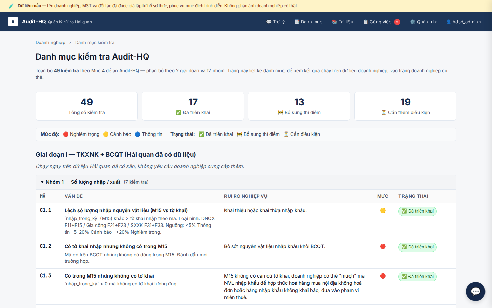
Mở bằng 📑 Danh mục trên thanh trên cùng.
G2
Thư viện tài liệu
Hướng dẫn sử dụng — bản trong ứng dụng của cẩm nang này.
Phương pháp tính điểm rủi ro — công thức đầy đủ.
Văn bản pháp lý — Thông tư 38/2015, 39/2018 và 81/2019.
📚 Tài liệu
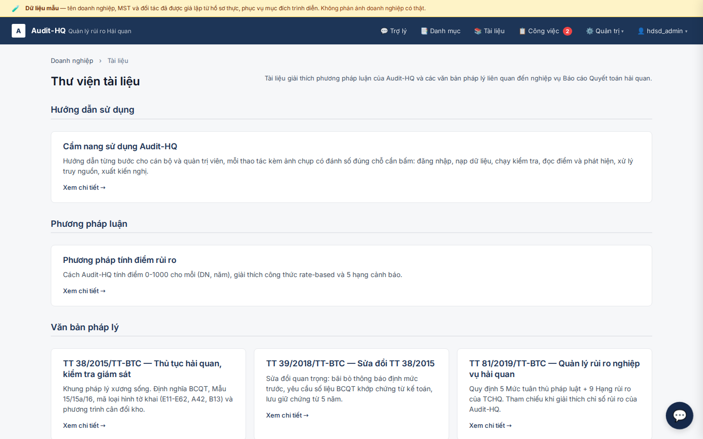
Mở bằng 📚 Tài liệu trên thanh trên cùng.
H
Dành cho quản trị viên
Các mục dưới đây nằm trong nhóm ⚙️ Quản trị và chỉ quản trị viên thấy.
H1
Người dùng
Tạo tài khoản mới với vai trò cán bộ hoặc quản trị viên.
Đặt lại mật khẩu — tài khoản đó sẽ bị buộc đổi mật khẩu ở lần đăng nhập kế tiếp.
Xoá tài khoản. Không tự xoá được chính mình.
Quản trị → Người dùng
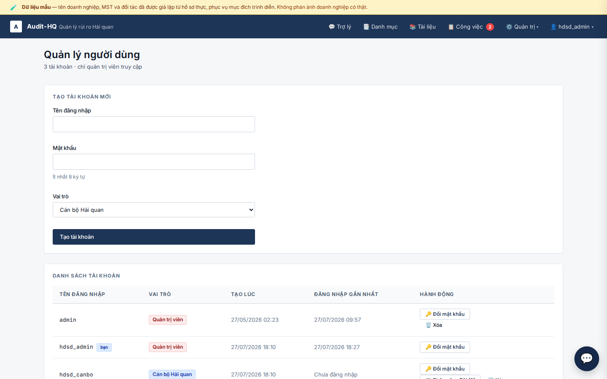
Danh sách tài khoản trong hệ thống.
H2
Phân công doanh nghiệp
Tick các doanh nghiệp cán bộ được phép xem.
Bấm Lưu phân công.
Phân công doanh nghiệp
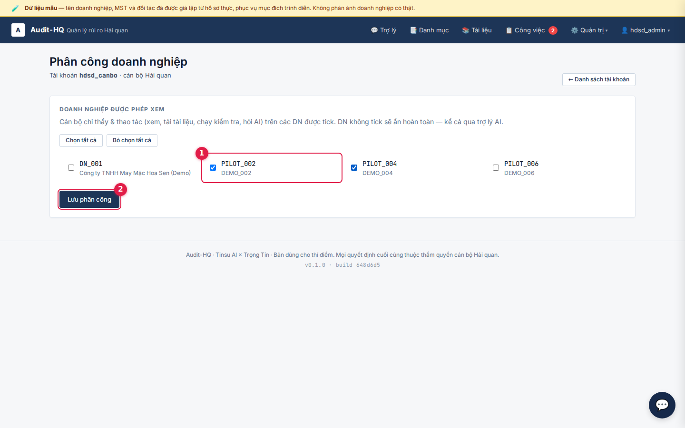
Đây là cơ chế phân quyền cốt lõi của hệ thống.
Doanh nghiệp không được tick sẽ ẩn hoàn toàn với cán bộ đó, kể cả khi hỏi qua trợ lý AI. Phân công cho tài khoản quản trị viên không có tác dụng, vì quản trị viên luôn thấy tất cả.
H3
Ngưỡng hạng rủi ro
Điều chỉnh ngưỡng phân chia năm mức cảnh báo.
Khi lưu, mức cảnh báo của các doanh nghiệp bị ảnh hưởng được tính lại.